Grafana¶
In this topic, we will see how to install Grafana, using the provided rpms.
Installation¶
Manual installation¶
There should be a package for grafana under the bluebanquise repository.
By running the following command:
dnf install grafana # (RHEL8)
yum install grafana # (RHEL7)
It should install grafana-server.
Useful Files¶
The service is located under /usr/lib/systemd/system/grafana-server.service
The binary under /usr/sbin/grafana-server
Grafana datas (dashboards, and so on) are stored under /var/lib/grafana/grafana.db
Grafana default settings under /usr/share/grafana/conf/default.ini
Now, log into Grafana at http://localhost:3000, using default credentials admin / admin.
Dashboard¶
A dashboard is made of Query and Alerts.
Query¶
metrics field¶
This section is where you put Prometheus metric queries. See the Prometheus section of the documentation for more information about the metrics (functions, different types of variables, show only certain instances) as both tools share the same syntax.
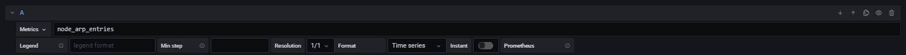{kind=link}
By default, it shows you the requested metric in a graph panel.
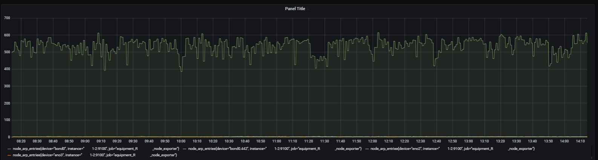{kind=link}
legend field¶
You can choose here what the legend will look like.
syntaxe: {{ metric label }}text_you_want
By default, it will show the whole metric. Example:
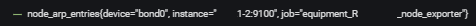{kind=link}
By example:
{{instance}}:toto:{{device}}
Will provides:
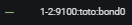{kind=link}
min step and resolution¶
Note
It is recommended not to change the min step and Resolution.
format¶
Time series or table or heatmap. It is recommended to choose timeseries if you desire to make a graph.
instant¶
If you only want to have the latest scraped metric. Useful when using tables.
Transform¶
Note
The transform tab is new with Grafana 7, and is still in development.
{kind=link}
Mainly useful when using graphs. Allows you to show the things you want in the table, by reducing, filtering, joining metrics, and organizing fields.
For example :
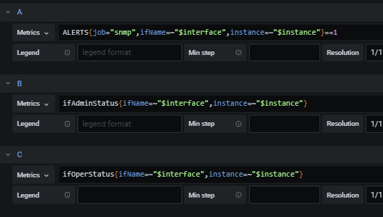{kind=link}
Here, we have 3 queries, but if you make no transform, it will look like this:
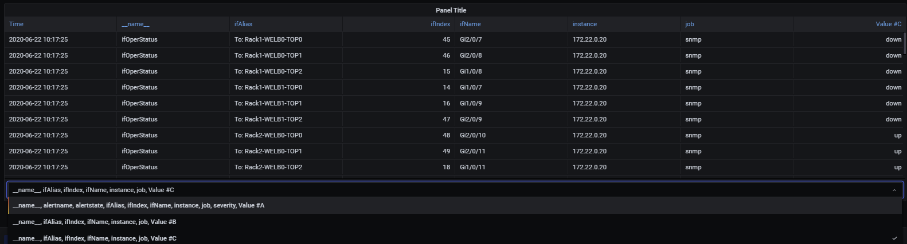{kind=link}
So we need to make the following transformations to get the desired table:
Filter by name, to only take the values that we want.
Outer Join, to join the query values into one table (query A,query B,query C) here we join on ifName because it’s the common value between the queries that we want to use.
Organize field, to put everything where we want, and to rename de fields Value B and Value C (values of the queries) to show what they represent.
With this transformation:
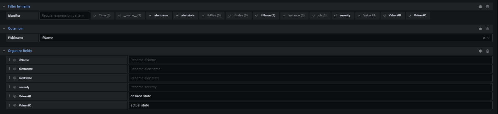{kind=link}
You get the following result:
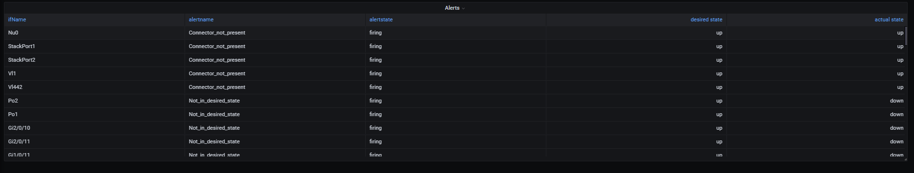{kind=link}
You can find more about the different transformations here: https://grafana.com/docs/grafana/latest/panels/transformations/
Alert¶
You can create alerts in Grafana, by setting up conditions. It is pretty much self-explanatory, but if you want more info, you can check this link: https://grafana.com/docs/grafana/latest/alerting/create-alerts/
Note that alerts defined in Grafana are not related to alerts defined in Prometheus.
Note also that using plugins, it is possible to import into Grafana alerts registered into Alertmanager.
Types of Visualization¶
By default, there are 11 different types of visualization, but you can install more using the plugin list. You can find them here: https://grafana.com/grafana/plugins?direction=asc&orderBy=weight&type=panel
In this documentation, we will go through 2 of the most used ones, as they have approximately all the options that other types of visualization have.
Graph¶
Panel¶
Display¶
Here, you can choose the design of your graph. You can fidget with the options to get your desired graph. If you want more info, check https://grafana.com/docs/grafana/latest/panels/visualizations/graph-panel/
Series override¶
In this section, you have access to even more customization. It allows you to customize only certain series, using regex. Here is a detailed example on how to use it: https://community.grafana.com/t/advanced-graphing-part1-style-overrides/207
Axes¶
Choose the units of the axes, and relabel them. You can also add mins and maxs. You can have more info here:
Legend¶
Legend related options, you can show the legend as a table, add min, max, avg, current values.
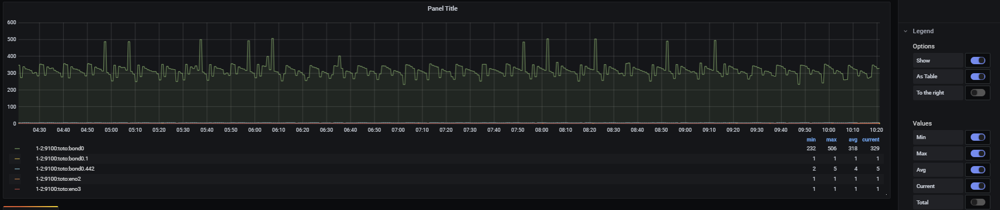{kind=link}
Thresholds¶
The threshold lets you change the background color when the value is less than or greater than the chosen value.
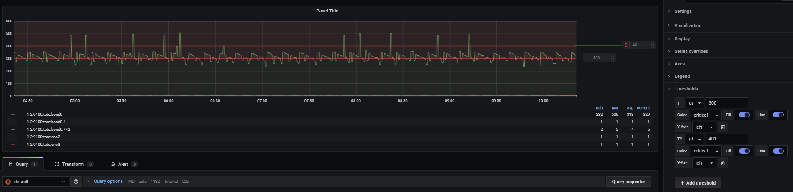{kind=link}
Time regions¶
Allows to highlight certain time regions of the graph, not used very often.
Data links, links¶
Here, you can add links to different graphs, using the URL. For more info, check here: https://grafana.com/docs/grafana/latest/linking/data-links/
Bar gauge¶
Panel¶
Display¶
You can choose between two options in the show option. Calculate will show you the result of the calculation (First Value, Last Value, and so on), whereas All Values will show you all the values scraped in the last XX minutes. You can choose the max number of results in the Limit field. You can also choose the orientation and the display mode (aesthetics)
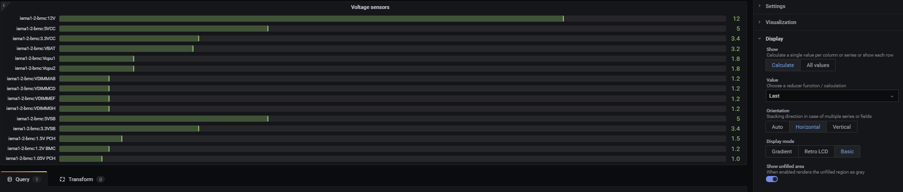{kind=link}
Links¶
Cf above.
Repeat options¶
If activated, will show the panel X times in the dashboard, with X being the number of results we get.
for example with the repeat option enabled:
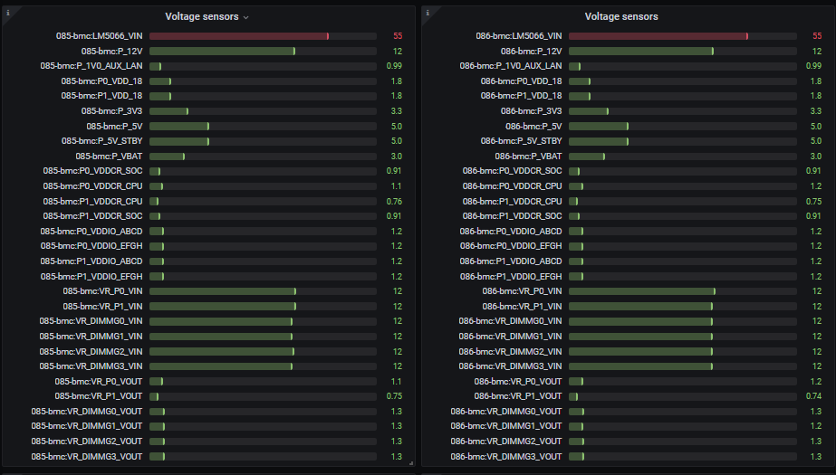{kind=link}
without the repeat option enabled:
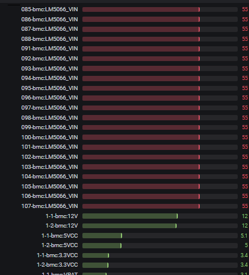{kind=link}
as you can see, in one case, you get the results in different panels, and in the other case you get the results in the same panel.
Field¶
Unit¶
Self-explanatory, choose the unit, min, max and the display name for the values.
{kind=link}
Value mapping¶
Transforms the values into text.
Example:
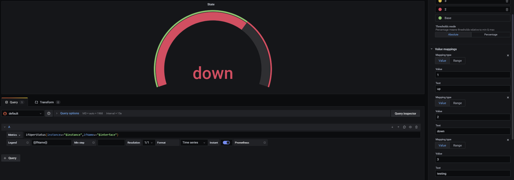{kind=link}
Here, we know that if the metric’s value is 1, it means that it is up, 2 down, and so on. So we map those values accordingly.
Data links¶
See above.
Override¶
Override lets you override some values, by filtering fields. However, it is still a beta option.
For more info check above.
Extra¶
Variables¶
To access get variables like these:
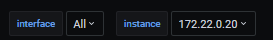{kind=link}
first, go to the top right corner of Grafana:
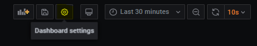{kind=link}
go to variable:
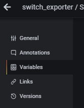{kind=link}
Then, enter a query to get the results you want to transform as a variable. For example:
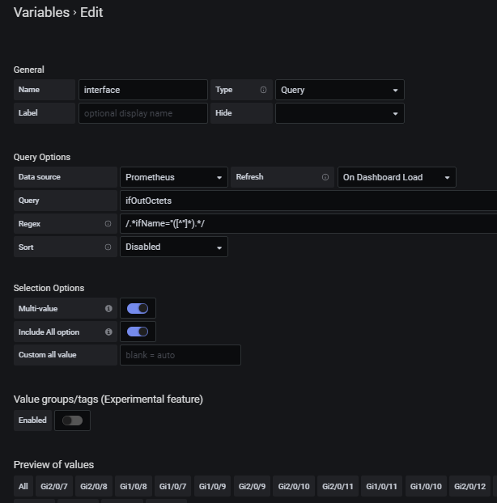{kind=link}
By doing this query you get the different instances of ifOutOctets. Without the regex used like that:
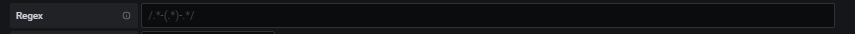{kind=link}
you should get results like that:
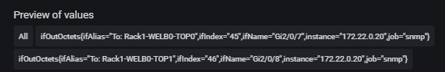{kind=link}
However, by using the regex seen above, we get results that can be later used with some queries, like for example:
ifConnectorPresent{ifName=~"$interface"}
with $interface the name of our variable.
Note
Here, we use =~ in order to accept special regex characters, like .* for example. You can see more about that in the Prometheus part of the documentation
Main Dashboard¶
To create a main dashboard, simply create a new dashboard, and choose visualization style “Dashboard list”, you should get something like that:
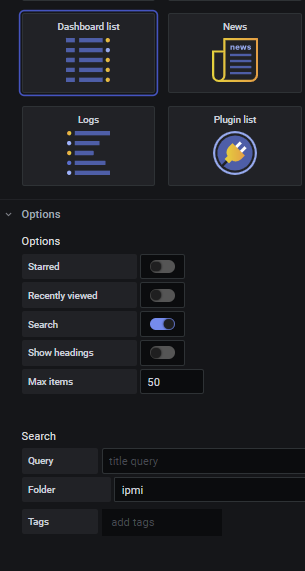{kind=link}
Choose the Search option and then simply choose the folder that you want to list.
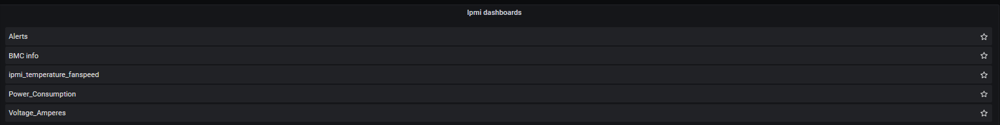{kind=link}
By clicking on the dashboard links, you get redirected to them.